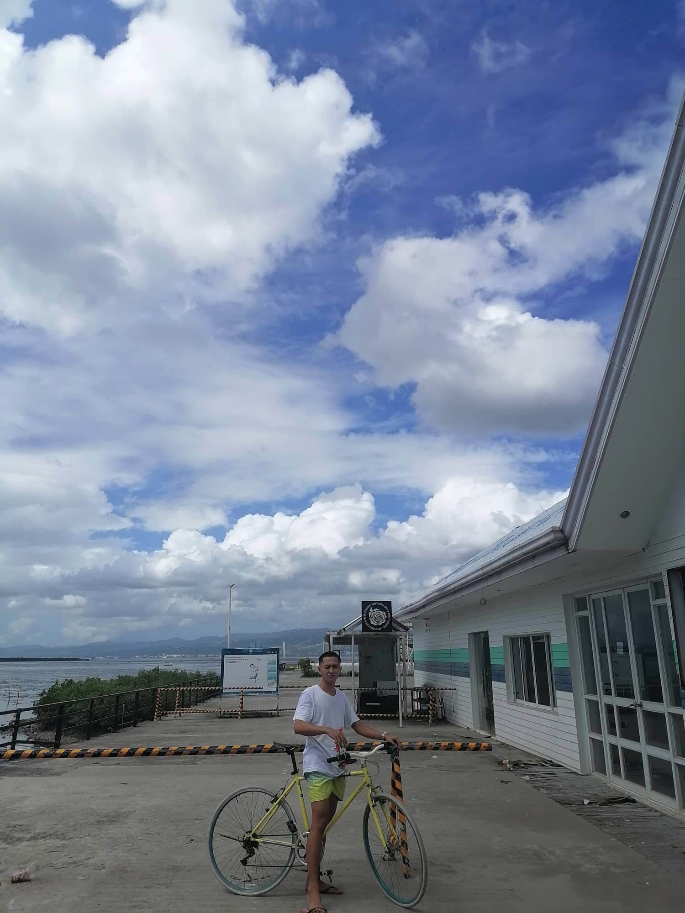
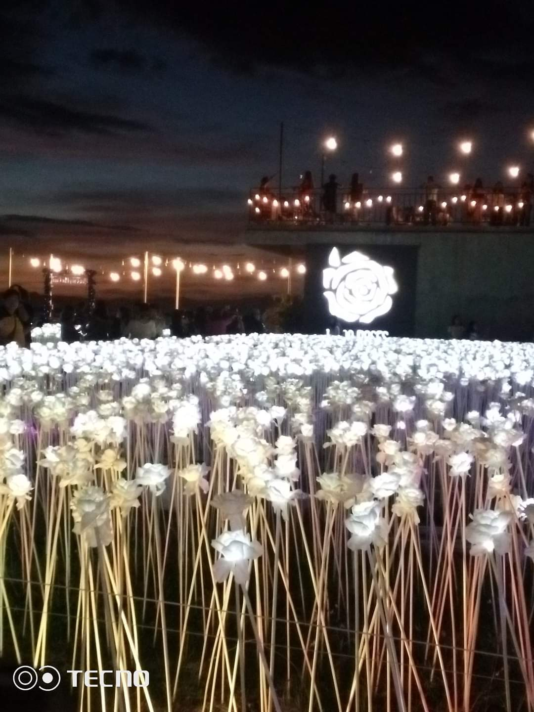
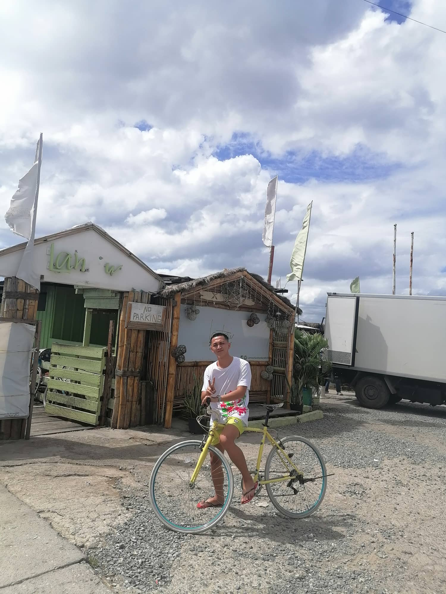
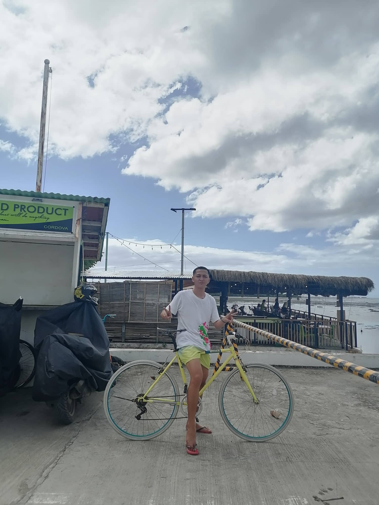
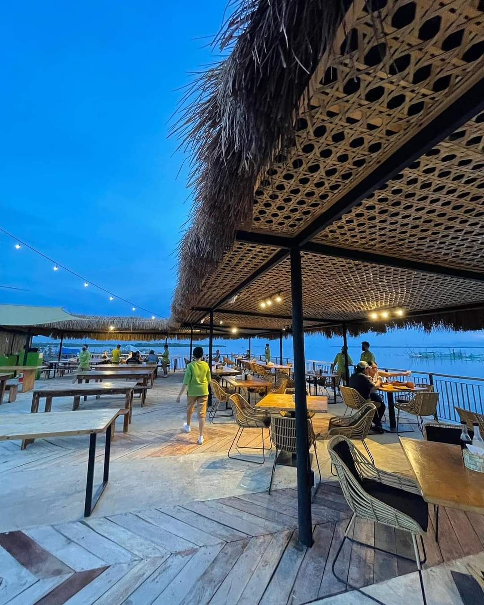
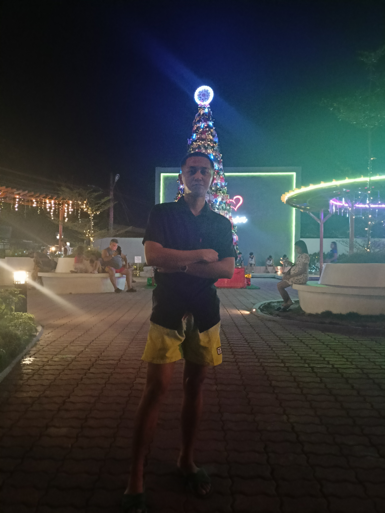
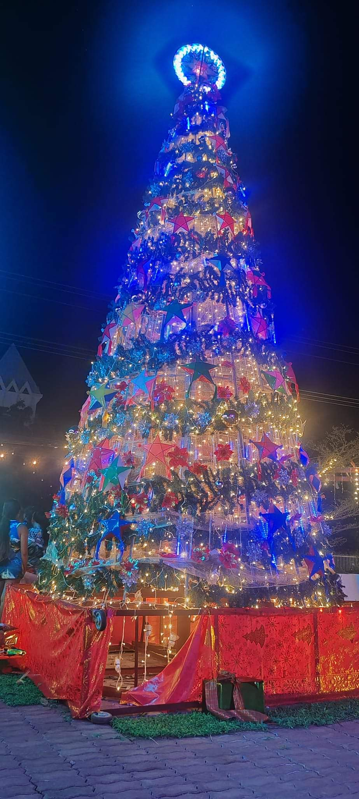

MY PERSONAL BLOG
CORDOVA RORO PORT

december 7, 2023. I decided blog with mybike went the Famous Roro in Cordova Cebu. You will never get lost going there as it is a very well known place.
Just wondering what's up with this place that many people really like to visit and hangout with.
Then later I found out that Roro is a Famous Food Court or Restaurant in Cordova that is located in Roro Port Road.
food court for everyone.
We can also see in here the Famous Third bridge that connected from Cebu to Cordova.
. It is located near the sea.
But as for now let me show you all what's in there.
h2>10k ROSES


cordova 10000 roses cafe
The Cordova 10000 Roses Café is nowadays one of the most popular places in Cordova, Mactan Island, Cebu, Philippines. The café is located in Barangay Day-as in Cordova.
The Influx of visitors to the place come to see for themselves and enjoy the white light emitting from within the white flowers themselves.
By the way, they are not real flowers, apparently, but made of synthetic and plastic petals each supported by metals that serve as stems making stand.
LANTAW



LANTAW
Good food plus a stunning scenery. This is the main reason why people flock to Lantaw Floating Native Restaurant in Cordova, Cebu.
Lantaw is a Bisaya word that translates to “look out”. It is a floating restaurant located in Day-as, Cordova where you can enjoy having an intimate dinner with your family while watching the sun set in the horizon with the calming sound of seawater surrounding the restaurant.
The interior of Lantaw restaurant also boasts of an Asian theme, with bamboos dominating the entire structure. Indeed, Lantaw Floating Restaurant is one of the restaurants in Cebu province with the best views. Aside from the view, Lantaw Floating Native Restaurant is known for their palatable dishes that are sure to make you crave for a second serving.Their regular customers come back for their best-sellers such as their crispy pata, tuna panga, crispy kare-kare, and buttered shrimp


FREEDOM PLAZA
the Freedom Plaza. When you are a stranger in a new place, you would likely find capitols, museums and plazas the popular landmarks and immediate representations of the community and its history. We decided to take a picture of the Freedom monument which proved witness to the heroism of two Cordova locals, Juan Nuñez and Pablo Biongcog, who lost their lives during the Japanese occupation. We were busy having our pictures taken when we realized that the structure held the word “FREEDOM” with the last letter inverted, showing “FREEDOW”, instead. It must have been removed through time and put back in place the wrong way. Sometimes, we unconsciously present the irony in our messages. In this case, looking around the old capitol (designed with touches of Spanish and American style) and the inverted “M” makes me skeptic if the municipality indeed fully freed itself from the bondage of its past under non-Filipino regimes. To note, “CORDOBA”, a merging of 3 balangays (Gab-I, Day-as, and Pilipul), was decreed independent from Opon in 1863..